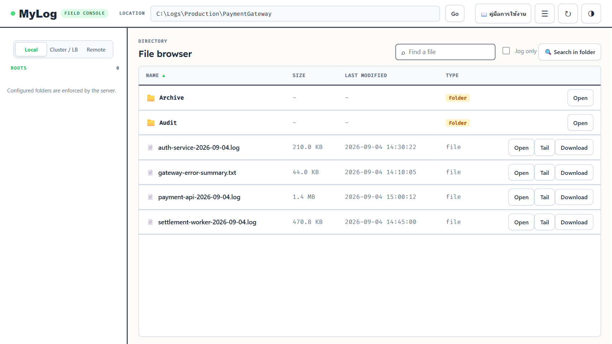
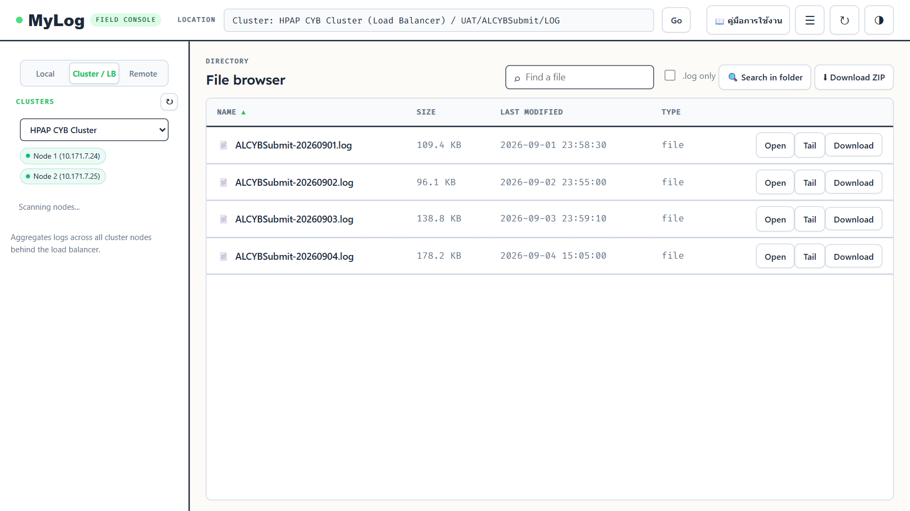
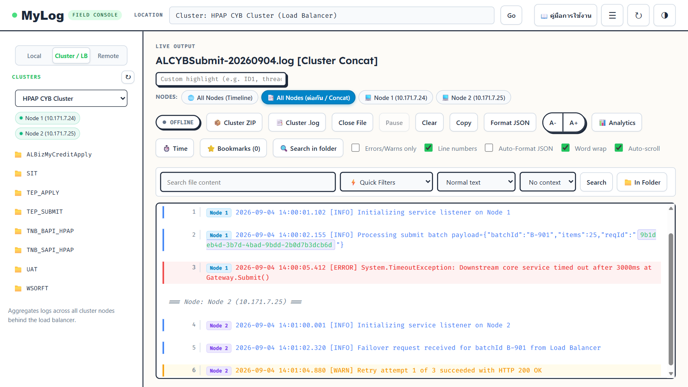
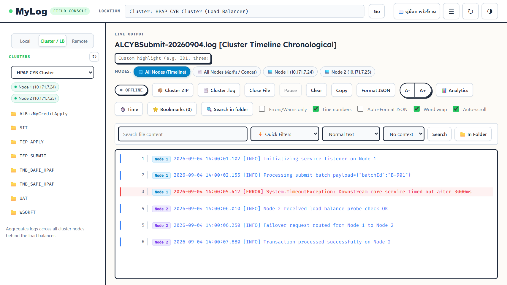
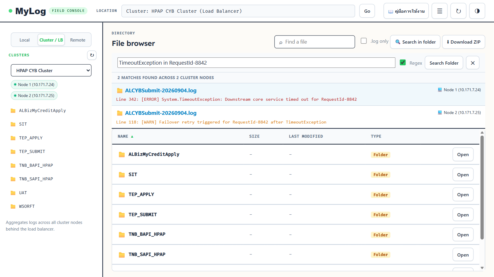
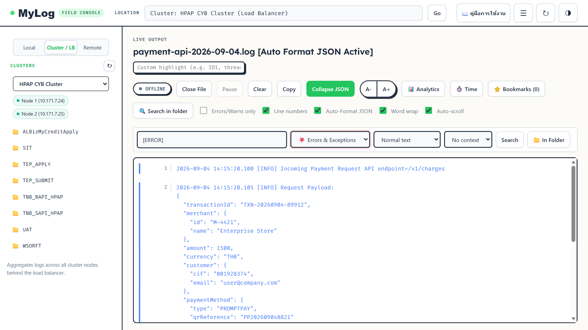
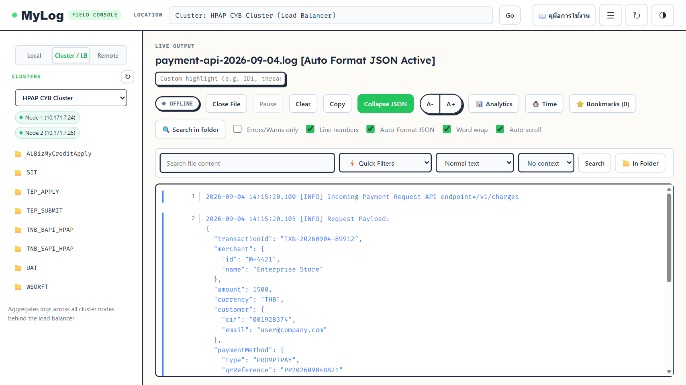
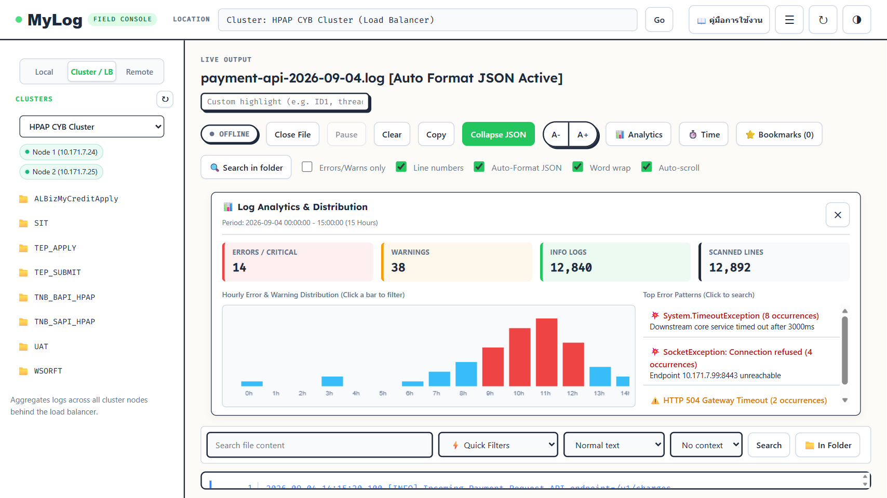
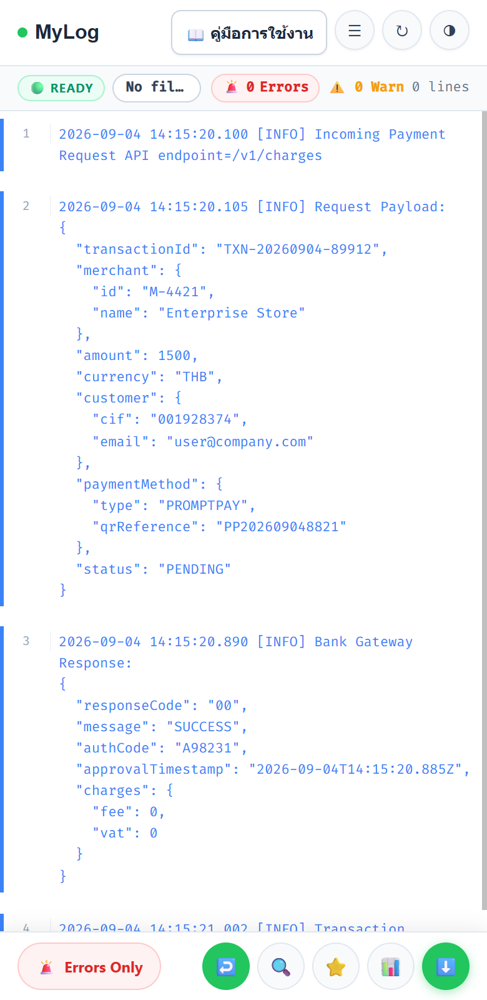

ระบบ MyLog ได้รับการออกแบบให้ทำงานบนเว็บเบราว์เซอร์ผ่านเครือข่าย Intranet ภายในองค์กร 100% โดยไม่เชื่อมต่ออินเทอร์เน็ตภายนอก มีมาตรการความปลอดภัยสูงสุดด้วย Path Traversal Protection (ป้องกันการเจาะเข้าถึงไฟล์นอกเหนือจาก Whitelist ที่ได้รับอนุญาต) และ Zero-RAM File Streaming เพื่อป้องกันปัญหาหน่วยความจำเซิร์ฟเวอร์เต็มเมื่ออ่านไฟล์ขนาดใหญ่หลายร้อยเมกะไบต์

Local, Cluster / LB และ Remote พร้อมแผนผังต้นไม้โฟลเดอร์ (Folder Tree)
Open (เปิดอ่าน), Tail (สตรีมสด Real-time) และ Download (ดาวน์โหลด)
.log only, ปุ่ม 🔍 Search in folder (ค้นหาข้อความทั้งโฟลเดอร์) และปุ่ม ⬇ Download ZIP
MyLog มีสถาปัตยกรรมที่ยืดหยุ่น รองรับการเชื่อมต่อแหล่งที่มาของ Log ได้ 3 รูปแบบหลัก เพื่อตอบสนองการทำงานของทีมงานในทุกระดับ:

| โหมดการทำงาน | ลักษณะการทำงาน | กรณีการใช้งานที่เหมาะสม |
|---|---|---|
| 💻 Local Mode | อ่านไฟล์ Log บนเครื่องเซิร์ฟเวอร์ที่ติดตั้ง MyLog โดยตรง หรืออ่านผ่าน Windows Network Share (UNC Path เช่น \192.168.1.10Logs) |
ความเร็วในการโหลดสูงที่สุด เหมาะสำหรับเซิร์ฟเวอร์เดี่ยว (Single Server) หรือโฟลเดอร์แชร์ในวงแลนเดียวกัน |
| 🌐 Remote Mode (Gateway) | เชื่อมต่อไปยัง REST API Gateway ของสภาพแวดล้อม SIT หรือ UAT ดึงรายการโปรเจกต์และไฟล์ Log มาแสดงผลโดยไม่ต้องรีโมต | ทีมผู้ใช้ที่ไม่ได้รับสิทธิ์ VPN ข้ามวงเครือข่าย หรือต้องการตรวจสอบ Log ของสภาพแวดล้อมทดสอบจากจุดเดียว |
| 🔀 Cluster / LB Mode | รวมศูนย์เครื่องแม่ข่ายหลายเครื่องที่ทำงานร่วมกันหลัง Load Balancer (เช่น Node 1: 192.168.1.10 และ Node 2: 192.168.1.11) |
ระบบงานสำคัญระดับธนาคารที่มีการกระจายโหลดหรือทำ High Availability (HA) เพื่อสืบสวนปัญหาที่กระจายข้ามเครื่อง |
เมื่อเลือกเปิดไฟล์ Log ในโหมด Cluster ผู้ใช้จะสามารถเลือกรูปแบบการจัดเรียงข้อความ Log จากทุกโหนดได้ 2 รูปแบบหลัก ผ่านปุ่ม Pill Switcher ด้านบน:


| มุมมอง (View Mode) | การจัดเรียงเนื้อหา | การใช้งานที่แนะนำ |
|---|---|---|
| 📑 All Nodes (ต่อกัน / Concat) |
นำ Log ของ Node 1 ทั้งหมดตั้งแต่ต้นจนจบ แล้วตามด้วย Log ของ Node 2 ทั้งหมด มีเส้นคั่น === Node: [NodeName] === ระบุชัดเจน
|
เหมาะสำหรับผู้ใช้ที่ต้องการอ่าน Log ทีละเครื่องแบบต่อเนื่อง ไม่ต้องการให้บรรทัดของแต่ละเครื่องสลับไปมาให้อ่านสับสน |
| 🌐 All Nodes (Timeline) | ดึงบรรทัดจากทุกเครื่องมารวมกัน แล้วจัดเรียงตาม Timestamp เปรียบเสมือนเห็นภาพรวมของทั้งระบบพร้อมกันในวินาทีนั้น | เหมาะสำหรับสืบสวนปัญหาการกระจายโหลด (Load Balancing) หรือการทำ Failover เมื่อต้องการดูว่าเครื่องไหนตอบสนองก่อนหรือหลัง |
| 💻 เฉพาะเจาะจง Node | กรองแสดงผลเฉพาะ Log ของเครื่องแม่ข่ายเครื่องนั้นๆ เพียงเครื่องเดียว | เมื่อทราบแน่ชัดแล้วว่า Root Cause เกิดขึ้นที่เครื่องใดเครื่องหนึ่งโดยเฉพาะ |
ในระบบที่มี Log ขนาดใหญ่หรือมีไฟล์ย้อนหลังหลายวัน ผู้ใช้ไม่จำเป็นต้องเปิดหาทีละไฟล์อีกต่อไป! ฟังก์ชัน 🔍 Search in folder จะทำการสแกนหาข้อความที่ต้องการจากทุกไฟล์ในโฟลเดอร์ปัจจุบันทันที (และในโหมด Cluster จะสแกนข้ามทุกโหนดพร้อมกัน):

TimeoutException
Regex ได้
ในขณะที่เปิดอ่านไฟล์ Log ระบบมีแถบตัวกรองด่วนแบบสำเร็จรูป (Quick Filters) ช่วยให้ตัดข้อความที่ไม่เกี่ยวข้องออก และเหลือเฉพาะสิ่งที่น่าสงสัยได้ในคลิกเดียว:

| ตัวกรอง (Preset) | สิ่งที่ระบบคัดกรอง | ประโยชน์สำหรับผู้ใช้ |
|---|---|---|
| 💥 Errors & Exceptions | กรองเฉพาะข้อผิดพลาดระดับ Error หรือ Exception จริงๆ (ฉลาดพอที่จะตัด JSON ที่มี "error": null ในระดับ INFO ทิ้ง) |
หาจุดล้มเหลวของโปรแกรมได้ทันทีโดยไม่ต้องไล่ดูทีละบรรทัด |
| ⚠️ Warnings | กรองเฉพาะบรรทัดที่มีข้อความเตือน WARN หรือ Warning |
ตรวจสอบสัญญาณเตือนก่อนที่ระบบจะเกิดเหตุการณ์วิกฤต |
| 🌐 HTTP 4xx / 5xx | กรองเฉพาะบรรทัดที่มีรหัสสถานะ HTTP ผิดพลาด เช่น 400, 401, 404, 500, 502, 503, 504 | สืบสวนปัญหาการเชื่อมต่อระหว่าง Microservices หรือ API Gateway |
| ⏱️ Slow Requests (>1s) | ตรวจจับและคัดกรองคำขอที่ใช้เวลาประมวลผลนานกว่า 1,000 มิลลิวินาที (1 วินาทีขึ้นไป) | ระบุจุดคอขวด (Performance Bottlenecks) ของระบบ |
| 🆔 Trace ID / GUID | กรองหาบรรทัดที่มีค่า Correlation ID, RequestId หรือ GUID รูปแบบมาตรฐาน | ใช้ติดตามธุรกรรมของลูกค้ารายบุคคลข้ามระบบงาน |
| 🔌 Timeouts & Sockets | กรองเฉพาะปัญหา Connection Timeout, Socket Closed, หรือ Connection Refused | ตรวจหาสาเหตุเซิร์ฟเวอร์ปลายทางล่มหรือปัญหาทางเน็ตเวิร์ก |
ไฟล์ Log ยุคใหม่มักมีขนาดก้อน JSON Payload ที่ยาวมากและพิมพ์ต่อกันเป็นบรรทัดเดียว ทำให้อ่านยากอย่างยิ่ง MyLog จึงเตรียมเครื่องมือช่วยวิเคราะห์ขั้นสูงไว้รองรับ:

Auto-Format JSON: เมื่อติ๊กใช้งาน ระบบจะค้นหาก้อน JSON ในข้อความ Log แล้วจัดย่อหน้า (Indentation) ขึ้นบรรทัดใหม่อย่างสวยงามโดยอัตโนมัติระบบมี AI Tokenizer ทำการตรวจจับรหัส GUID, CorrelationId, และ RequestUid ในทุกบรรทัด Log แล้วแปลงเป็น Clickable Chip:
☆ หน้าเลขบรรทัดเพื่อปักหมุดบรรทัดสำคัญผู้ใช้สามารถกดปุ่ม 📊 Analytics บนแถบเครื่องมือเพื่อเปิดหน้าต่างวิเคราะห์เชิงลึกของไฟล์ Log ที่กำลังเปิดอยู่:

MyLog มีฟังก์ชันสำเนาและส่งออก Log ออกมาวิเคราะห์ต่อนอกระบบได้อย่างสะดวก รวดเร็ว และประหยัดหน่วยความจำ:
| รูปแบบการดาวน์โหลด | ตำแหน่งปุ่มคำสั่ง | ผลลัพธ์ที่ได้ |
|---|---|---|
| ดาวน์โหลดไฟล์เดี่ยว | ปุ่ม Download ในตารางไฟล์ หรือปุ่ม Download File ในแถบ Viewer |
ดาวน์โหลดไฟล์ Log นั้นในรูปแบบ .log หรือ .txt แบบต้นฉบับดั้งเดิม |
| ดาวน์โหลดทั้งโฟลเดอร์ (ZIP) | ปุ่ม ⬇ Download ZIP มุมบนขวาของตารางไฟล์ | ระบบจะบีบอัดไฟล์ Log ทั้งหมดในโฟลเดอร์เป็นไฟล์ ZIP เดียว (หากอยู่ในโหมด Cluster ระบบจะดึงไฟล์จากทุก Node มารวมแยกโฟลเดอร์ให้เป็นระเบียบ) |
| ดาวน์โหลดไฟล์รวม Concat (.log) | ปุ่ม 📑 Cluster .log ในแถบควบคุมของ Cluster Viewer |
รวม Log ของทุกโหนดต่อกันเป็นไฟล์ .log เดียว นำไปเปิดดูใน Text Editor ภายนอกได้ทันที
|
สำหรับทีมงาน On-call หรือ Support ที่จำเป็นต้องตรวจสอบระบบนอกสถานที่ MyLog มีหน้าจอมือถือ (Field Console UX) ที่ออกแบบมาเพื่อการใช้งานด้วยนิ้วโป้งมือเดียวโดยเฉพาะ:

🚨 Errors Only (กรองเฉพาะข้อผิดพลาด), 🔍 Search (ค้นหา), ↩️ Wrap (สลับการตัดบรรทัด) และ ⭐ Bookmarks (ปักหมุด)Cluster / LB ใน Sidebar ด้านซ้าย และเลือกคลัสเตอร์ที่ต้องการตรวจสอบ
Open ที่ไฟล์ Log ประจำวัน ระบบจะโหลดหน้าต่างแบบรวมโหนด
Timeouts & Sockets.log และ .txt ในโฟลเดอร์ปัจจุบันสูงสุด 20 ไฟล์ล่าสุดของแต่ละโหนด โดยอ่านข้อความแบบสตรีมมิงความเร็วสูง จึงไม่ทำให้เซิร์ฟเวอร์หน่วงและตอบสนองได้ภายในไม่กี่วินาที
| ปุ่ม / ฟังก์ชัน | ตำแหน่งบนหน้าจอ | การทำงาน |
|---|---|---|
🔍 Search in folder |
มุมขวาบนของตารางไฟล์ | ค้นหาข้อความจากทุกไฟล์ในโฟลเดอร์ (รวมถึงข้ามทุก Node ใน Cluster) |
⬇ Download ZIP |
มุมขวาบนของตารางไฟล์ | บีบอัดไฟล์ทั้งโฟลเดอร์เป็น ZIP ก้อนเดียว |
📑 All Nodes (Concat) |
Pill Switcher ใน Cluster Viewer | สลับการดู Log รวมแบบต่อกัน Node 1 จบแล้วตามด้วย Node 2 |
🌐 All Nodes (Timeline) |
Pill Switcher ใน Cluster Viewer | สลับการดู Log รวมตามเวลาจริง (Chronological Timestamp) |
Auto-Format JSON |
Checkbox ใน View Options | จัดระเบียบโครงสร้าง JSON ในบรรทัดให้อ่านง่ายและคลิกย่อ/ขยายได้ |
📊 Analytics |
แถบเครื่องมือด้านบน Viewer | เปิดแดชบอร์ดสถิติและกราฟวิเคราะห์ข้อผิดพลาดรายชั่วโมง |
⭐ Bookmarks |
แถบเครื่องมือด้านบน Viewer | เปิดดูบรรทัดที่ปักหมุดไว้ และกด Export Summary ส่งต่อได้ทันที |